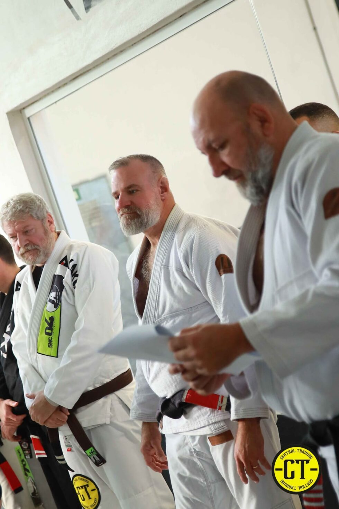
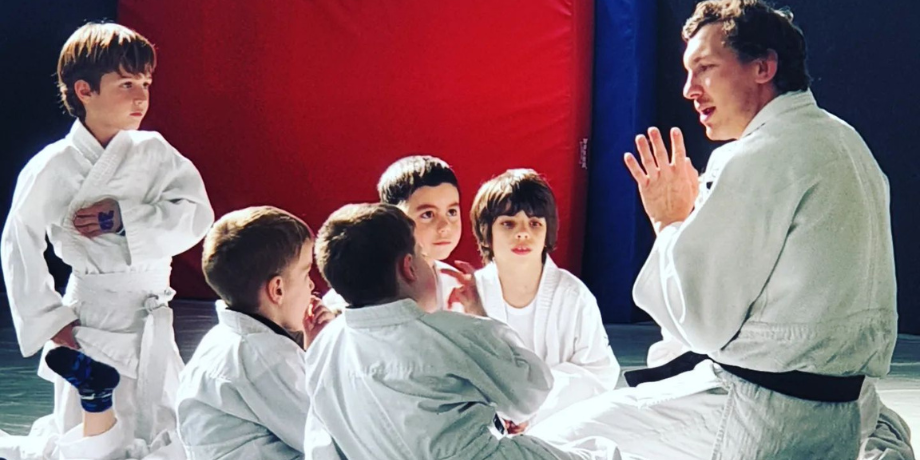
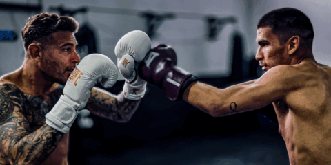
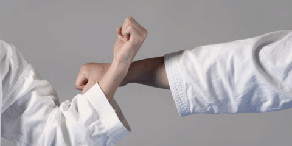
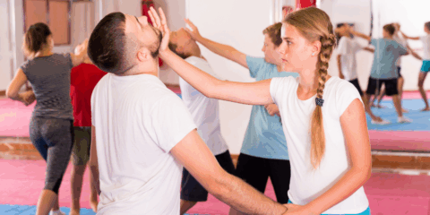
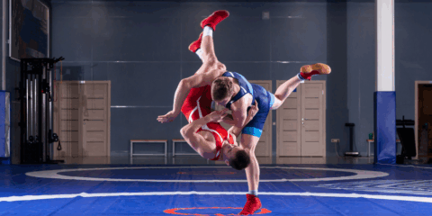
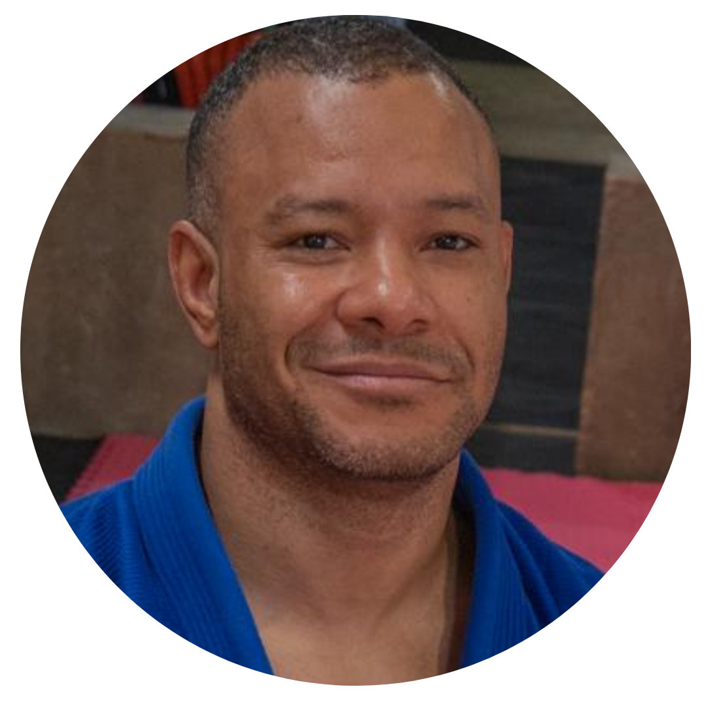

Brazilian Jiu-Jitsu (BJJ)
Arte marcial centrado en el combate en el suelo, utilizando técnicas de agarre, control y sumisión para neutralizar al oponente usando la técnica y la estrategia en lugar de la fuerza bruta.
Ver DetallesCentral Training es más que una simple escuela de artes marciales; es un centro integral dedicado a promover un bienestar completo a través de una variedad de disciplinas que buscan mejorar la salud mental, física y las habilidades de autodefensa de sus miembros. Nuestra filosofía se centra en el desarrollo holístico del individuo, ofreciendo un camino hacia una vida más plena y saludable.
La historia de Central Training comienza en el año 2007, marcando el inicio de nuestra misión con la apertura de nuestra primera escuela dedicada exclusivamente al Brazilian Jiu-Jitsu (BJJ). Esta disciplina, conocida por sus técnicas de agarre y control en el suelo, fue la base sobre la cual se construyó nuestro compromiso con la excelencia en las artes marciales.
Diez años más tarde, en 2017, se inauguró Central Training Murcia, ampliando nuestras instalaciones y oferta educativa. En este nuevo espacio, se sumaron un diverso cuadro de maestros y profesores especializados en distintas disciplinas marciales y entrenamientos funcionales, permitiendo así un enfoque más completo en el desarrollo de nuestros socios y alumnos.
A lo largo de más de 15 años, hemos tenido el privilegio de acompañar a nuestros socios y alumnos en su camino hacia una mejor calidad de vida. Nuestra pasión por lo que hacemos se refleja en cada clase, taller y sesión de entrenamiento que ofrecemos. La satisfacción y los logros de nuestros miembros son el testimonio del impacto positivo que Central Training ha logrado generar en la comunidad.

Descubre el arte marcial perfecto para ti. Desde principiantes hasta competidores avanzados.
Arte marcial centrado en el combate en el suelo, utilizando técnicas de agarre, control y sumisión para neutralizar al oponente usando la técnica y la estrategia en lugar de la fuerza bruta.
Ver Detalles
Disciplina sin kimono que combina derribos, agarres y sumisiones para controlar al adversario. Se enfoca intensamente en la técnica y la posición dominante, ideal para competición o defensa personal realista.
Ver Detalles
Sistema de combate completo que integra las mejores técnicas de golpeo y agarre. Ofrece una experiencia versátil, eficaz y moderna para acondicionamiento físico y autodefensa.
Ver Detalles
Desarrollo infantil a través de las artes marciales. Fomentamos valores, disciplina, respeto y coordinación motora desde edades tempranas.
Ver Detalles
Arte marcial afro-brasileño que combina facetas de danza, música y acrobacias, así como expresión corporal. Favorece la fuerza, elasticidad muscular y ritmo.
Ver Detalles
Arte marcial japonés basado en proyecciones, derribos y control en suelo, ideal para aprender disciplina, equilibrio, técnica y respeto mientras se desarrolla la fuerza y agilidad.
Ver Detalles
Deporte de combate dinámico que combina puños y patadas, mejora la condición física, la coordinación y los reflejos, además de ser una herramienta eficaz para autodefensa.
Ver Detalles
Arte marcial tailandés que utiliza puños, codos, rodillas y piernas en potentes combinaciones, ideal para desarrollar fuerza, resistencia, coordinación y defensa personal.
Ver Detalles
Sistema híbrido de defensa personal que combina técnicas de puños, patadas y bloqueos con movimientos fluidos y rápidos, ideal para mejorar reflejos y confianza.
Ver DetallesDeporte de combate basado en puños, desplazamientos y defensa, perfecto para aumentar fuerza, resistencia, coordinación y reflejos, además de ser un gran entrenamiento cardiovascular.
Ver Detalles
Conjunto de técnicas simples y efectivas para protegerte en situaciones reales, enseñando a reaccionar con seguridad y confianza frente a posibles agresiones.
Ver Detalles
La lucha grecorromana es un deporte de combate en el que los participantes intentan derribar al oponente utilizando solo la parte superior del cuerpo y técnicas de agarre y proyección.
Ver DetallesNuestros horarios se sincronizan automáticamente. Clases desde las 07:00h de la mañana hasta las 22:00h de la noche.
[La tabla de horarios se cargará aquí vía JavaScript dinámico]
Novedades, seminarios y avisos importantes.
Únete a nuestro seminario intensivo con invitados especiales. Plazas limitadas.
El próximo festivo nacional el gimnasio abrirá solo en horario de mañana (09:00 a 14:00).
Aprende de los mejores profesionales. Pioneros y especialistas certificados a nivel internacional.

Black Belt BJJ, profesor de educación física, graduado en capoeira, y pionero en el jiujitsu brasileño en la región de Murcia. Amplia experiencia como Arbitro, profesor y competidor. Reconocido por las federaciones IBJJF, FIJJD Y CBJJ.

Black Belt BJJ, Brow Belt en JUDO, Entrenador Nacional de Grapling. Actuación como árbitro y competidor en los campeonatos y copas de mayor relevancia en el escenario nacional. Reconocido por las federaciones FIJJD, IBJJF, y CBJJ.

Con más de 20 años de experiencia en Jiu-Jitsu Brasileño, comenzó a los 16 años y ha competido en diversos campeonatos, siendo reconocido por las principales federaciones a nivel mundial.
Especializado en la fusión de acrobacias, rítmica afrobrasileña, agilidad y autodefensa.

Con mas de 30 años de experiencia en las artes marciales. Cinturón negro por la federación Brasileña y internacional (Paradnoy Muay Thai), coach de Boxeo y cinturón negro en Brazilian jiujitsu.

Técnico superior en fitness y entrenamiento personal, estudiante de nutrición. Profesora de entrenamiento funcional, flexibilidad y Zumba, además de competidora activa en Jiu-Jitsu Brasileño (BJJ).

Cinturón negro y profesor de Jiu-Jitsu Brasileño en JA Murcia. Ha participado en varios campeonatos bajo la FIJJD, logrando medallas en categorías de kimono y NO-GI.

Profesor y entrenador de Judo con 30 años de experiencia y 3er Dan. Máster en optimización del rendimiento deportivo, Técnico Deportivo Nivel 2 y especializado en preparación física y mental.

Practicante de artes marciales desde los 6 años, Black belt en Kenpo karate, Brown belt karate goju-ryu. Competidora en copas de relevancia en ámbito nacional.

Competidor en actividad, experiencia en distintas artes marciales como Judo, Boxeo, lucha, Grappling y KickBoxing. Participación en varias competiciones logrando títulos de gran relevancia.

Campeón de España FEKM Cinturón negro 2°grado CAFD y master alto rendimiento. Competidor en activo a nivel nacional e internacional. Miembro del equipo nacional.

Cinturón negro en Judo, miembro de la selección española senior de Lucha. Conquistó medallas y títulos de gran relevancia en el panorama nacional e internacional en modalidades de Greco Romana, Lucha y Grappling.
Un espacio diseñado exclusivamente para el máximo rendimiento y confort de nuestros atletas.

Promedio de 5.0 Estrellas en Google basado en más de 118 reseñas reales.
"El mejor gimnasio de artes marciales de Murcia. Se respira respeto y disciplina desde el primer día."
— Carlos Pérez
"Escuela 10 en instalaciones y todo. Los profesores son de 10, estoy muy orgulloso de pertenecer a la escuela."
— Raul Garcia
"...La calidad de esta COMUNIDAD DE ARTES MARCIALES no solo se mide por el excelente equipo de profesionales, sino por el respeto, los valores que transmiten y el ambiente increíble de compañeros y hermanos."
— Pablo Molina
Da el primer paso. Reserva tu clase de prueba gratuita, resuelve tus dudas o ven a conocer nuestras instalaciones. Nuestro equipo de maestros está listo para guiarte en el tatami.